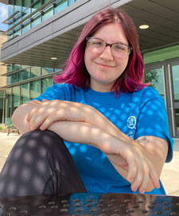

Sofia Magill's AENG 110 Portfolio |
||
|

Student at Millersville University |
My name is Sofia Magill and I am a technology and engineering education major at Millersville University. In high school, I took a liking to my tech ed and graphics classes as well as a class called STEM Interns where we went to our local elementary schools to teach Lego robotics lessons to the student. We also hosted local events like the chemistry carnival for K-3rd graders and Eco Day for 5th graders. I also joined TSA in my senior year and attended both regional and state competitions as well as serving as my chapter's sergeant at arms. This and the gentle push from my tech ed teachers are what lead me to be where I am today. As a student at MU I have joined TEECA, a professional development club for tech ed students to grow their skills and their connections. I am also a student worker for MU Catering, which hosts and serves many events for organizations. In the future, I would ideally like to go back and teach at my old school district with a focus on graphics or drafting. I would also be interested in becoming one of the TSA advisors. As of recently, I have also become open to the idea of teaching STEM to younger, elementary school students. In this class, we created various projects including a print project, a photo project, a video project, and an infographic. We learned about sketching, different types of communication, different printing processes, typography, and design principles. |
|
|
© 2024 Sofia Magill | ||